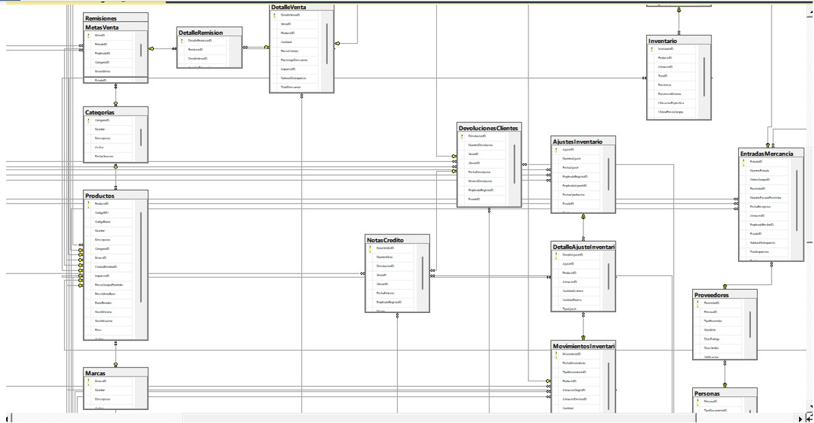

USE FerreteriaDB;
CREATE DATABASE FerreteriaDB;
ON PRIMARY (
NAME = 'Ferreteria_Data',
FILENAME = 'C:\SQLServer\Data\FerreteriaDB.mdf',
SIZE = 20MB,
MAXSIZE = UNLIMITED,
FILEGROWTH = 5MB
)
LOG ON (
NAME = 'Ferreteria_Log',
FILENAME = 'C:\SQLSever\Data\FerreteriaDB.ldf',
SIZE = 10MB,
MAXSIZE = UNLIMITED,
FILEGROWTH = 2MB
);
USE FerreteriaDB;
CREATE TABLE Categorias (
CategoriaID VARCHAR(20),
Nombre VARCHAR(50) NOT NULL,
Descripcion VARCHAR(200),
Activa BIT DEFAULT 1,
FechaCreacion DATETIME DEFAULT GETDATE(),
FechaModificacion DATETIME DEFAULT GETDATE(),
CONSTRAINT PK_Categoria PRIMARY KEY(CategoriaID)
);
CREATE TABLE UnidadesMedida (
UnidadID VARCHAR(20),
Nombre VARCHAR(30) NOT NULL,
Abreviatura VARCHAR(10) NOT NULL,
Activa BIT Default 1,
CONSTRAINT PK_Unidades_Medida PRIMARY KEY(UnidadID)
);
CREATE TABLE Impuestos (
ImpuestoID VARCHAR(20),
Nombre VARCHAR(30) NOT NULL,
Porcentaje DECIMAL(5,2) NOT NULL,
FechaInicio DATE NOT NULL,
FechaFin DATE NULL,
Activo BIT DEFAULT 1,
CONSTRAINT PK_Impuestos PRIMARY KEY(ImpuestoID)
);
CREATE TABLE Marcas (
MarcaID VARCHAR(20),
Nombre VARCHAR(50) NOT NULL,
Descripcion VARCHAR(200),
Activa BIT DEFAULT 1,
CONSTRAINT PK_Marcas PRIMARY KEY(MarcaID)
);
CREATE TABLE Almacenes (
AlmacenID VARCHAR(20),
Nombre VARCHAR(50) NOT NULL,
Direccion VARCHAR(200) NOT NULL,
Telefono VARCHAR(20),
ResponsableID VARCHAR(20) NULL,
Activo BIT DEFAULT 1,
FechaCreacion DATETIME DEFAULT GETDATE(),
CONSTRAINT PK_Almacenes PRIMARY KEY(AlmacenID)
);
CREATE TABLE ZonasAlmacen (
ZonaID VARCHAR(20),
AlmacenID VARCHAR(20) NOT NULL,
Nombre VARCHAR(50) NOT NULL,
Descripcion VARCHAR(200),
CONSTRAINT PK_ZonasAlmacen PRIMARY KEY(ZonaID),
CONSTRAINT FK_Zonas_Almacen_Almacen FOREIGN KEY (AlmacenID) REFERENCES Almacenes(AlmacenID)
);
CREATE TABLE Productos (
ProductoID VARCHAR(20),
CodigoSKU VARCHAR(20) UNIQUE NOT NULL,
CodigoBarras VARCHAR(30),
Nombre VARCHAR(100) NOT NULL,
Descripcion VARCHAR(50),
CategoriaID VARCHAR(20) NOT NULL,
MarcaID VARCHAR(20),
UnidadMedidaID VARCHAR(20) NOT NULL,
ImpuestoID VARCHAR(20) NOT NULL,
PrecioCompraPromedio DECIMAL(12,2) NOT NULL,
PrecioVentaBase DECIMAL(12,2) NOT NULL,
PuntoReorden INT DEFAULT 5,
StockMinimo INT DEFAULT 1,
StockMaximo INT DEFAULT(1000),
Peso DECIMAL(8,2),
Activo BIT DEFAULT 1,
FechaCreacion DATETIME DEFAULT GETDATE(),
FechaModificacion DATETIME DEFAULT GETDATE(),
Imagen VARCHAR(255),
CONSTRAINT PK_Producto PRIMARY KEY(ProductoID),
CONSTRAINT FK_Productos_Categorias FOREIGN KEY(CategoriaID) REFERENCES Categorias(CategoriaID),
CONSTRAINT FK_Productos_Marcas FOREIGN KEY(MarcaID) REFERENCES Marcas(MarcaID),
CONSTRAINT FK_Productos_Impuestos FOREIGN KEY(ImpuestoID) REFERENCES Impuestos(ImpuestoID)
);
--CONSTRAINT FK_Productos_UnidadesMedida FOREIGN KEY(UnidadMedidaID) REFERENCES UnidadesMedida(UnidadID),
-- Tabla de Inventario (Stock por Almacén)
CREATE TABLE Inventario (
InventarioID VARCHAR(20),
ProductoID VARCHAR(20) NOT NULL,
AlmacenID VARCHAR(20) NOT NULL,
ZonaID VARCHAR(20),
Existencia INT NOT NULL DEFAULT 0,
ExistenciaMinima INT DEFAULT 0,
UbicacionEspecifica VARCHAR(50),
UltimoPrecioCompra DECIMAL(12,2),
FechaUltimaEntrada DATETIME,
FechaUltimaSalida DATETIME,
CONSTRAINT PK_Inventario PRIMARY KEY(InventarioID),
CONSTRAINT FK_Inventario_Productos FOREIGN KEY (ProductoID) REFERENCES Productos(ProductoID),
CONSTRAINT FK_Inventario_Almacenes FOREIGN KEY (AlmacenID) REFERENCES Almacenes(AlmacenID),
CONSTRAINT FK_Inventario_ZonasAlmacen FOREIGN KEY (ZonaID) REFERENCES ZonasAlmacen(ZonaID),
CONSTRAINT UK_Inventario_Producto_Almacen UNIQUE (ProductoID, AlmacenID)
);
CREATE TABLE Personas (
PersonaID VARCHAR(20),
TipoDocumentoID VARCHAR(20) NOT NULL,
NumeroDocumento VARCHAR(10) NOT NULL,
P_Nombre VARCHAR(50) NOT NULL,
S_Nombre VARCHAR(50),
RazonSocial VARCHAR(100),
FechaNacimiento DATE,
Direccion VARCHAR(200),
Ciudad VARCHAR(50),
Departamento VARCHAR(50),
Pais VARCHAR(50),
Telefono_P VARCHAR(20),
Telefono_S VARCHAR(20),
Email VARCHAR(100),
FechaCreacion DATETIME DEFAULT GETDATE(),
FechaModificacion DATETIME DEFAULT GETDATE(),
Activo BIT DEFAULT 1,
CONSTRAINT PK_Personas PRIMARY KEY(PersonaID),
CONSTRAINT UQ_Personas_Documento UNIQUE(TipoDocumentoID, NumeroDocumento)
);
--CONSTRAINT FK_Personas_TiposDocumento FOREIGN KEY(TipoDocumentoID) REFERENCES TiposDocumento(TipoDocumentoID),
CREATE TABLE Clientes (
ClienteID VARCHAR(20),
PersonaID VARCHAR(20) NOT NULL,
CategoriaCliente VARCHAR(20) DEFAULT 'Regular', --- Regular, VIP, Mayorista.
DiasCredito INT DEFAULT 0,
ClasificacionCrediticia CHAR(1) DEFAULT 'A', -- A, B, C, etc.
Observaciones VARCHAR(500),
CONSTRAINT PK_Clientes PRIMARY KEY(ClienteID),
CONSTRAINT FK_Clientes_Personas FOREIGN KEY(PersonaID) REFERENCES Personas(PersonaID)
);
CREATE TABLE Proveedores (
ProveedorID VARCHAR(20),
PersonaID VARCHAR(20) NOT NULL,
TipoProveedor VARCHAR(30), ---Material para construccion , Herraminetas
SitioWeb VARCHAR(100),
DiasEntrega INT DEFAULT 1,
DiasCredito INT DEFAULT 0,
Calificacion INT DEFAULT 5 CHECK(Calificacion BETWEEN 1 AND 5),
Observaciones VARCHAR(500),
CONSTRAINT PK_Proveedores PRIMARY KEY(ProveedorID),
CONSTRAINT FK_Proveedores_Personas FOREIGN KEY(PersonaID) REFERENCES Personas(PersonaID)
);
CREATE TABLE Cargos (
CargoID VARCHAR(20),
Nombre VARCHAR(200) NOT NULL,
Descripcion VARCHAR(200),
Activo BIT DEFAULT 1
CONSTRAINT PK_Cargos PRIMARY KEY(CargoID)
);
CREATE TABLE Empleados (
EmpleadoID VARCHAR(20),
PersonaID VARCHAR(20) NOT NULL,
CargoID VARCHAR(20) NOT NULL,
FechaContratacion DATE NOT NULL,
FechaTerminacion DATE,
JefeDirectoID INT,
Salario DECIMAL(12,2),
CONSTRAINT PK_Empleados PRIMARY KEY(EmpleadoID),
CONSTRAINT FK_Empleados_Personas FOREIGN KEY(PersonaID) REFERENCES Personas(PersonaID),
CONSTRAINT FK_Empleados_Cargos FOREIGN KEY(CargoID) REFERENCES Cargos(CargoID),
CONSTRAINT FK_Empleados_Jefes FOREIGN KEY(JefeDirectoID) REFERENCES Empleados(EmpleadoID)
);
--- AGREGAMOS LA RELCION PENDIENTE EN ALMACENES
ALTER TABLE ALMACENES
ADD CONSTRAINT FK_Almacenes_Empleados FOREIGN KEY (ResponsableID) REFERENCES Empleados(EmpleadoID);
ALTER TABLE Productos
ADD CONSTRAINT FK_Productos_UnidadesMedida FOREIGN KEY(UnidadMedidaID) REFERENCES UnidadesMedida(UnidadID);
ALTER TABLE Personas
ADD CONSTRAINT FK_Personas_TiposDocumento FOREIGN KEY(TipoDocumentoID) REFERENCES TiposDocumento(TipoDocumentoID);
-- Insertar datos en tabla TiposDocumento (tabla faltante en el script pero referenciada)
CREATE TABLE TiposDocumento (
TipoDocumentoID VARCHAR(20),
Nombre VARCHAR(50) NOT NULL,
Abreviatura VARCHAR(10) NOT NULL,
Activo BIT DEFAULT 1,
CONSTRAINT PK_TiposDocumento PRIMARY KEY(TipoDocumentoID)
);
CREATE TABLE EstadosDocumento (
EstadoID VARCHAR(20),
Nombre VARCHAR(30) NOT NULL,
Descripcion VARCHAR(200),
Activo BIT DEFAULT 1,
CONSTRAINT PK_Estados_Documento PRIMARY KEY(EstadoID)
);
CREATE TABLE OrdenesCompra (
OrdenCompraID VARCHAR(20),
NumeroOrden VARCHAR(20) NOT NULL,
ProveedorID VARCHAR(20) NOT NULL,
FechEmision DATETIME NOT NULL,
FechaEntregaEsperada DATE,
EmpleadoID VARCHAR(20) NOT NULL,
EstadoID VARCHAR(20) NOT NULL,
SubtotalSinImpuesto DECIMAL(12,2) DEFAULT 0,
TotalImpuestos DECIMAL(12,2) DEFAULT 0,
Total DECIMAL(12,2) DEFAULT 0,
Observaciones VARCHAR(200),
FechaCreacion DATETIME DEFAULT GETDATE(),
FechaModificacion DATETIME DEFAULT GETDATE(),
CONSTRAINT PK_OrdenesCompra PRIMARY KEY(OrdenCompraID),
CONSTRAINT FK_OrdenesCompra_Proveedores FOREIGN KEY(EmpleadoID) REFERENCES Empleados(EmpleadoID),
CONSTRAINT FK_OrdenesCompra_Empleados FOREIGN KEY(EmpleadoID) REFERENCES Empleados(EmpleadoID),
CONSTRAINT FK_OrdenesCompra_Estados FOREIGN KEY(EstadoID) REFERENCES EstadosDocumento(EstadoID)
);
CREATE TABLE DetalleCompra (
DetalleOrdenID VARCHAR(20),
OrdenCompraID VARCHAR(20)NOT NULL,
ProductoID VARCHAR(20) NOT NULL,
Cantidad VARCHAR(20) NOT NULL,
PrecioUnitario DECIMAL(12,2) NOT NULL,
PorcentajeDescuento DECIMAL(5,2) DEFAULT 0,
ImpuestoID VARCHAR(20) NOT NULL,
SubtotalImpuesto DECIMAL(12,2) NOT NULL,
TotalImpuesto DECIMAL(12,2) NOT NULL,
TotalLinea DECIMAL(12,2) NOT NULL,
CONSTRAINT PK_DetallesCompra PRIMARY KEY(DetalleOrdenID),
CONSTRAINT FK_DetalleOrden_OrdenesCompra FOREIGN KEY(OrdenCompraID) REFERENCES OrdenesCompra(OrdenCompraID),
CONSTRAINT FK_DetalleOrden_Productos FOREIGN KEY(ProductoID) REFERENCES Productos(ProductoID),
CONSTRAINT FK_DetelleOrden_Impuestos FOREIGN KEY(ImpuestoID) REFERENCES Impuestos(ImpuestoID)
);
CREATE TABLE EntradasMercancia (
EntradaID VARCHAR(20),
NumeroEntrada VARCHAR(20) NOT NULL,
OrdenCompraID VARCHAR(20), -- Puede ser NULL si es una entrada sin orden previa
ProveedorID VARCHAR(20) NOT NULL,
NumeroFacturaProveedor VARCHAR(30),
FechaRecepcion DATETIME NOT NULL,
AlmacenID VARCHAR(20) NOT NULL,
EmpleadoRecibeID VARCHAR(20) NOT NULL,
EstadoID VARCHAR(20) NOT NULL,
SubtotalSinImpuesto DECIMAL(12,2) DEFAULT 0,
TotalImpuestos DECIMAL(12,2) DEFAULT 0,
Total DECIMAL(12,2) DEFAULT 0,
Observaciones VARCHAR(500),
FechaCreacion DATETIME DEFAULT GETDATE(),
CONSTRAINT PK_EntradaMercancia PRIMARY KEY(EntradaID),
CONSTRAINT FK_EntradasMercancia_OrdenesCompra FOREIGN KEY (OrdenCompraID) REFERENCES OrdenesCompra(OrdenCompraID),
CONSTRAINT FK_EntradasMercancia_Proveedores FOREIGN KEY (ProveedorID) REFERENCES Proveedores(ProveedorID),
CONSTRAINT FK_EntradasMercancia_Almacenes FOREIGN KEY (AlmacenID) REFERENCES Almacenes(AlmacenID),
CONSTRAINT FK_EntradasMercancia_Empleados FOREIGN KEY (EmpleadoRecibeID) REFERENCES Empleados(EmpleadoID),
CONSTRAINT FK_EntradasMercancia_Estados FOREIGN KEY (EstadoID) REFERENCES EstadosDocumento(EstadoID)
);
CREATE TABLE DetalleEntradaMercancia (
DetalleEntradaID VARCHAR(20),
EntradaID VARCHAR(20) NOT NULL,
ProductoID VARCHAR(20) NOT NULL,
CantidadRecibida VARCHAR(20) NOT NULL,
PrecioUnitario DECIMAL(12,2) NOT NULL,
ImpuestoID VARCHAR(20) NOT NULL,
SubtotalSinImpuesto DECIMAL(12,2) NOT NULL,
TotalImpuesto DECIMAL(12,2) NOT NULL,
TotalLinea DECIMAL(12,2) NOT NULL,
DetalleOrdenCompraID VARCHAR(20), -- Puede ser NULL
ZonaID VARCHAR(20), -- Zona del almacén donde se ubicará
CONSTRAINT PK_DetalleEntradaMercancia PRIMARY KEY(DetalleEntradaID),
CONSTRAINT FK_DetalleEntrada_Entradas FOREIGN KEY (EntradaID) REFERENCES EntradasMercancia(EntradaID),
CONSTRAINT FK_DetalleEntrada_Productos FOREIGN KEY (ProductoID) REFERENCES Productos(ProductoID),
CONSTRAINT FK_DetalleEntrada_Impuestos FOREIGN KEY (ImpuestoID) REFERENCES Impuestos(ImpuestoID),
CONSTRAINT FK_DetalleEntrada_DetalleOrden FOREIGN KEY (DetalleOrdenCompraID) REFERENCES DetalleCompra(DetalleOrdenID),----ERROR AQUÌ
CONSTRAINT FK_DetalleEntrada_Zonas FOREIGN KEY (ZonaID) REFERENCES ZonasAlmacen(ZonaID)
);
CREATE TABLE FormasPago (
FormaPagoID VARCHAR(20),
Nombre VARCHAR(50) NOT NULL,
RequiereVerificacion BIT DEFAULT 0,
RequiereAprobacion BIT DEFAULT 0,
PlazosDias INT DEFAULT 0,
Activa BIT DEFAULT 1,
CONSTRAINT PK_FormasPago PRIMARY KEY(FormaPagoID)
);
CREATE TABLE Ventas (
VentaID VARCHAR(20),
NumeroFactura VARCHAR(20) NOT NULL,
SerieFactura VARCHAR(10) NOT NULL,
ClienteID VARCHAR(20) NOT NULL,
EmpleadoID VARCHAR(20) NOT NULL, -- Vendedor
FechaVenta DATETIME NOT NULL,
FormaPagoID VARCHAR(20) NOT NULL,
EstadoID VARCHAR(20) NOT NULL,
AlmacenID VARCHAR(20) NOT NULL,
SubtotalSinImpuesto DECIMAL(12,2) DEFAULT 0,
DescuentoTotal DECIMAL(12,2) DEFAULT 0,
TotalImpuestos DECIMAL(12,2) DEFAULT 0,
Total DECIMAL(12,2) DEFAULT 0,
Observaciones VARCHAR(500),
FechaCreacion DATETIME DEFAULT GETDATE(),
CONSTRAINT PK_Ventas PRIMARY KEY(VentaID),
CONSTRAINT FK_Ventas_Clientes FOREIGN KEY (ClienteID) REFERENCES Clientes(ClienteID),
CONSTRAINT FK_Ventas_Empleados FOREIGN KEY (EmpleadoID) REFERENCES Empleados(EmpleadoID),
CONSTRAINT FK_Ventas_FormasPago FOREIGN KEY (FormaPagoID) REFERENCES FormasPago(FormaPagoID),
CONSTRAINT FK_Ventas_Estados FOREIGN KEY (EstadoID) REFERENCES EstadosDocumento(EstadoID),
CONSTRAINT FK_Ventas_Almacenes FOREIGN KEY (AlmacenID) REFERENCES Almacenes(AlmacenID),
CONSTRAINT UQ_Ventas_NumeroSerie UNIQUE (NumeroFactura, SerieFactura)
);
CREATE TABLE DetalleVenta (
DetalleVentaID VARCHAR(20),
VentaID VARCHAR(20) NOT NULL,
ProductoID VARCHAR(20) NOT NULL,
Cantidad VARCHAR(20) NOT NULL,
PrecioUnitario DECIMAL(12,2) NOT NULL,
PorcentajeDescuento DECIMAL(5,2) DEFAULT 0,
ImpuestoID VARCHAR(20) NOT NULL,
SubtotalSinImpuesto DECIMAL(12,2) NOT NULL,
TotalDescuento DECIMAL(12,2) NOT NULL,
TotalImpuesto DECIMAL(12,2) NOT NULL,
TotalLinea DECIMAL(12,2) NOT NULL,
CONSTRAINT PK_DetelleVenta PRIMARY KEY(DetalleVentaID),
CONSTRAINT FK_DetalleVenta_Ventas FOREIGN KEY (VentaID) REFERENCES Ventas(VentaID),
CONSTRAINT FK_DetalleVenta_Productos FOREIGN KEY (ProductoID) REFERENCES Productos(ProductoID),
CONSTRAINT FK_DetalleVenta_Impuestos FOREIGN KEY (ImpuestoID) REFERENCES Impuestos(ImpuestoID)
);
CREATE TABLE PagosVenta (
PagoID VARCHAR(20),
VentaID VARCHAR(20) NOT NULL,
FormaPagoID VARCHAR(20) NOT NULL,
Monto DECIMAL(12,2) NOT NULL,
FechaPago DATETIME NOT NULL,
NumeroReferencia VARCHAR(50), -- Para cheques o transferencias
EmpleadoRegistraID VARCHAR(20) NOT NULL,
Observaciones VARCHAR(200),
CONSTRAINT PK_PagoVenta PRIMARY KEY(PagoID),
CONSTRAINT FK_PagosVenta_Ventas FOREIGN KEY(VentaID) REFERENCES Ventas(VentaID),
CONSTRAINT FK_PagosVenta_FormasPago FOREIGN KEY(FormaPagoID) REFERENCES FormasPago(FormaPagoID),
CONSTRAINT FK_PagosVenta_Empleados FOREIGN KEY(EmpleadoRegistraID) REFERENCES Empleados(EmpleadoID)
);
CREATE TABLE Remisiones (
RemisionID VARCHAR(20),
NumeroRemision VARCHAR(20) NOT NULL,
VentaID VARCHAR(20) NOT NULL,
FechaRemision DATETIME NOT NULL,
EmpleadoEntregaID VARCHAR(20) NOT NULL,
DireccionEntrega VARCHAR(200),
EstadoID VARCHAR(20) NOT NULL,
Observaciones VARCHAR(500),
CONSTRAINT PK_Remisones PRIMARY KEY(RemisionID),
CONSTRAINT FK_Remisones_Ventas FOREIGN KEY(VentaID) REFERENCES Ventas(VentaID),
CONSTRAINT FK_Remisiones_Empleados FOREIGN KEY (EmpleadoEntregaID) REFERENCES Empleados(EmpleadoID),
CONSTRAINT FK_Remisiones_Estados FOREIGN KEY(EstadoID) REFERENCES EstadosDocumento(EstadoID)
);
CREATE TABLE DetalleRemision (
DetalleRemisionID VARCHAR(20),
RemisionID VARCHAR(20) NOT NULL,
DetalleVentaID VARCHAR(20) NOT NULL,
CantidadEntregada INT NOT NULL,
CONSTRAINT PK_DetalleRemision PRIMARY KEY(DetalleRemisionID),
CONSTRAINT FK_DetalleRemision_Remisiones FOREIGN KEY(RemisionID) REFERENCES Remisiones(RemisionID),
CONSTRAINT FK_DetalleRemision_DetalleVenta FOREIGN KEY(DetalleVentaID) REFERENCES DetalleVenta(DetalleVentaID)
);
CREATE TABLE TiposMovimientoInventario (
TipoMovimientoID VARCHAR(20),
Nombre VARCHAR(50) NOT NULL,
Descripcion VARCHAR(200),
AfectaStock INT NOT NULL, -- 1: Aumenta, -1: Disminuye, 0: No afecta
RequiereAprobacion BIT DEFAULT 0,
Activo BIT DEFAULT 1,
CONSTRAINT PK_TiposMovimientoInventario PRIMARY KEY(TipoMovimientoID)
);
CREATE TABLE MovimientosInventario (
MovimientoID VARCHAR(20),
FechaMovimiento DATETIME NOT NULL,
TipoMovimientoID INT NOT NULL,
ProductoID VARCHAR(20) NOT NULL,
AlmacenOrigenID VARCHAR(20),
AlmacenDestinoID VARCHAR(20),
Cantidad VARCHAR(20) NOT NULL,
DocumentoReferenciaID VARCHAR(20), -- ID de Venta, Entrada, Devolución, etc.
TipoDocumentoReferencia VARCHAR(30), -- "Venta", "Entrada", "Ajuste", etc.
EmpleadoID VARCHAR(20) NOT NULL,
Observaciones VARCHAR(200),
FechaRegistro DATETIME DEFAULT GETDATE(),
CONSTRAINT PK_MovimientoInventario PRIMARY KEY(MovimientoID),
CONSTRAINT FK_MovimientosInventario_TiposMovimiento FOREIGN KEY (TipoMovimientoID) REFERENCES TiposMovimientoInventario(TipoMovimientoID),
CONSTRAINT FK_MovimientosInventario_Productos FOREIGN KEY (ProductoID) REFERENCES Productos(ProductoID),
CONSTRAINT FK_MovimientosInventario_AlmacenOrigen FOREIGN KEY (AlmacenOrigenID) REFERENCES Almacenes(AlmacenID),
CONSTRAINT FK_MovimientosInventario_AlmacenDestino FOREIGN KEY (AlmacenDestinoID) REFERENCES Almacenes(AlmacenID),
CONSTRAINT FK_MovimientosInventario_Empleados FOREIGN KEY (EmpleadoID) REFERENCES Empleados(EmpleadoID)
);
CREATE TABLE AjustesInventario (
AjusteID VARCHAR(20),
NumeroAjuste VARCHAR(20) NOT NULL,
FechaAjuste DATETIME NOT NULL,
EmpleadoRegistraID VARCHAR(20) NOT NULL,
EmpleadoApruebaID VARCHAR(20),
FechaAprobacion DATETIME,
EstadoID VARCHAR(20) NOT NULL,
Motivo VARCHAR(200) NOT NULL,
Observaciones VARCHAR(500),
CONSTRAINT PK_AjusteInventario PRIMARY KEY(AjusteID),
CONSTRAINT FK_AjustesInventario_EmpleadoRegistra FOREIGN KEY (EmpleadoRegistraID) REFERENCES Empleados(EmpleadoID),
CONSTRAINT FK_AjustesInventario_EmpleadoAprueba FOREIGN KEY (EmpleadoApruebaID) REFERENCES Empleados(EmpleadoID),
CONSTRAINT FK_AjustesInventario_Estados FOREIGN KEY (EstadoID) REFERENCES EstadosDocumento(EstadoID)
);
CREATE TABLE DetalleAjusteInventario (
DetalleAjusteID VARCHAR(20),
AjusteID VARCHAR(20) NOT NULL,
ProductoID VARCHAR(20) NOT NULL,
AlmacenID VARCHAR(20) NOT NULL,
CantidadAnterior INT NOT NULL,
CantidadNueva INT NOT NULL,
TipoAjuste CHAR(1) NOT NULL, -- 'A': Aumento, 'D': Disminución
MovimientoInventarioID VARCHAR(20), -- Para relacionar con el movimiento generado
CONSTRAINT PK_DetalleAjusteInventario PRIMARY KEY(DetalleAjusteID),
CONSTRAINT FK_DetalleAjuste_Ajustes FOREIGN KEY (AjusteID) REFERENCES AjustesInventario(AjusteID),
CONSTRAINT FK_DetalleAjuste_Productos FOREIGN KEY (ProductoID) REFERENCES Productos(ProductoID),
CONSTRAINT FK_DetalleAjuste_Almacenes FOREIGN KEY (AlmacenID) REFERENCES Almacenes(AlmacenID),
CONSTRAINT FK_DetalleAjuste_Movimientos FOREIGN KEY (MovimientoInventarioID) REFERENCES MovimientosInventario(MovimientoID)
);
CREATE TABLE DevolucionesClientes (
DevolucionID VARCHAR(20),
NumeroDevolucion VARCHAR(20) NOT NULL,
VentaID VARCHAR(20) NOT NULL,
ClienteID VARCHAR(20) NOT NULL,
FechaDevolucion DATETIME NOT NULL,
MotivoDevolucion VARCHAR(200) NOT NULL,
EmpleadoRegistraID VARCHAR(20) NOT NULL,
EstadoID VARCHAR(20) NOT NULL,
Total DECIMAL(12,2) DEFAULT 0,
Observaciones VARCHAR(500),
CONSTRAINT PK_DevolucionesClientes PRIMARY KEY(DevolucionID),
CONSTRAINT FK_Devoluciones_Ventas FOREIGN KEY (VentaID) REFERENCES Ventas(VentaID),
CONSTRAINT FK_Devoluciones_Clientes FOREIGN KEY (ClienteID) REFERENCES Clientes(ClienteID),
CONSTRAINT FK_Devoluciones_Empleados FOREIGN KEY (EmpleadoRegistraID) REFERENCES Empleados(EmpleadoID),
CONSTRAINT FK_Devoluciones_Estados FOREIGN KEY (EstadoID) REFERENCES EstadosDocumento(EstadoID)
);
CREATE TABLE DetalleDevolucionCliente (
DetalleDevolucionID VARCHAR(20),
DevolucionID VARCHAR(20) NOT NULL,
DetalleVentaID VARCHAR(20) NOT NULL,
ProductoID VARCHAR(20) NOT NULL,
CantidadDevuelta INT NOT NULL,
PrecioUnitario DECIMAL(12,2) NOT NULL,
SubtotalSinImpuesto DECIMAL(12,2) NOT NULL,
TotalImpuesto DECIMAL(12,2) NOT NULL,
TotalLinea DECIMAL(12,2) NOT NULL,
MovimientoInventarioID VARCHAR(20), -- Para relacionar con el movimiento generado
CONSTRAINT PK_DetalleDevolucionCliente PRIMARY KEY(DetalleDevolucionID),
CONSTRAINT FK_DetalleDevolucion_Devoluciones FOREIGN KEY (DevolucionID) REFERENCES DevolucionesClientes(DevolucionID),
CONSTRAINT FK_DetalleDevolucion_DetalleVenta FOREIGN KEY (DetalleVentaID) REFERENCES DetalleVenta(DetalleVentaID),
CONSTRAINT FK_DetalleDevolucion_Productos FOREIGN KEY (ProductoID) REFERENCES Productos(ProductoID),
CONSTRAINT FK_DetalleDevolucion_Movimientos FOREIGN KEY (MovimientoInventarioID) REFERENCES MovimientosInventario(MovimientoID)
);
CREATE TABLE NotasCredito (
NotaCreditoID VARCHAR(20),
NumeroNota VARCHAR(20) NOT NULL,
DevolucionID VARCHAR(20),
VentaID VARCHAR(20) NOT NULL,
ClienteID VARCHAR(20) NOT NULL,
FechaEmision DATETIME NOT NULL,
EmpleadoRegistraID VARCHAR(20) NOT NULL,
Monto DECIMAL(12,2) NOT NULL,
Observaciones VARCHAR(500),
CONSTRAINT PK_NotasCredito PRIMARY KEY(NotaCreditoID),
CONSTRAINT FK_NotasCredito_Devoluciones FOREIGN KEY (DevolucionID) REFERENCES DevolucionesClientes(DevolucionID),
CONSTRAINT FK_NotasCredito_Ventas FOREIGN KEY (VentaID) REFERENCES Ventas(VentaID),
CONSTRAINT FK_NotasCredito_Clientes FOREIGN KEY (ClienteID) REFERENCES Clientes(ClienteID),
CONSTRAINT FK_NotasCredito_Empleados FOREIGN KEY (EmpleadoRegistraID) REFERENCES Empleados(EmpleadoID)
);
CREATE TABLE Cotizaciones (
CotizacionID VARCHAR(20),
NumeroCotizacion VARCHAR(20) NOT NULL,
ClienteID VARCHAR(20) NOT NULL,
EmpleadoID VARCHAR(20) NOT NULL,
FechaCotizacion DATETIME NOT NULL,
ValidaHasta DATE NOT NULL,
EstadoID VARCHAR(20) NOT NULL,
SubtotalSinImpuesto DECIMAL(12,2) DEFAULT 0,
TotalImpuestos DECIMAL(12,2) DEFAULT 0,
Total DECIMAL(12,2) DEFAULT 0,
VentaGeneradaID VARCHAR(20), -- Si se convirtió en venta
Observaciones VARCHAR(500),
CONSTRAINT PK_Cotizaciones PRIMARY KEY(CotizacionID),
CONSTRAINT FK_Cotizaciones_Clientes FOREIGN KEY (ClienteID) REFERENCES Clientes(ClienteID),
CONSTRAINT FK_Cotizaciones_Empleados FOREIGN KEY (EmpleadoID) REFERENCES Empleados(EmpleadoID),
CONSTRAINT FK_Cotizaciones_Estados FOREIGN KEY (EstadoID) REFERENCES EstadosDocumento(EstadoID),
CONSTRAINT FK_Cotizaciones_Ventas FOREIGN KEY (VentaGeneradaID) REFERENCES Ventas(VentaID)
);
CREATE TABLE DetalleCotizacion (
DetalleCotizacionID VARCHAR(20),
CotizacionID VARCHAR(20) NOT NULL,
ProductoID VARCHAR(20) NOT NULL,
Cantidad INT NOT NULL,
PrecioUnitario DECIMAL(12,2) NOT NULL,
PorcentajeDescuento DECIMAL(5,2) DEFAULT 0,
ImpuestoID VARCHAR(20) NOT NULL,
SubtotalSinImpuesto DECIMAL(12,2) NOT NULL,
TotalDescuento DECIMAL(12,2) NOT NULL,
TotalImpuesto DECIMAL(12,2) NOT NULL,
TotalLinea DECIMAL(12,2) NOT NULL,
CONSTRAINT PK_DetalleCotizacion PRIMARY KEY(DetalleCotizacionID),
CONSTRAINT FK_DetalleCotizacion_Cotizaciones FOREIGN KEY (CotizacionID) REFERENCES Cotizaciones(CotizacionID),
CONSTRAINT FK_DetalleCotizacion_Productos FOREIGN KEY (ProductoID) REFERENCES Productos(ProductoID),
CONSTRAINT FK_DetalleCotizacion_Impuestos FOREIGN KEY (ImpuestoID) REFERENCES Impuestos(ImpuestoID)
);
CREATE TABLE HistorialPreciosProductos (
HistorialPrecioID VARCHAR(20),
ProductoID VARCHAR(20) NOT NULL,
PrecioAnterior DECIMAL(12,2) NOT NULL,
PrecioNuevo DECIMAL(12,2) NOT NULL,
FechaCambio DATETIME NOT NULL,
EmpleadoID VARCHAR(20) NOT NULL,
Motivo VARCHAR(200),
CONSTRAINT PK_HistorialPreciosProductos PRIMARY KEY(HistorialPrecioID),
CONSTRAINT FK_HistorialPrecios_Productos FOREIGN KEY (ProductoID) REFERENCES Productos(ProductoID),
CONSTRAINT FK_HistorialPrecios_Empleados FOREIGN KEY (EmpleadoID) REFERENCES Empleados(EmpleadoID)
);
CREATE TABLE LogAccionesUsuario (
LogID VARCHAR(20),
EmpleadoID VARCHAR(20) NOT NULL,
FechaHora DATETIME NOT NULL DEFAULT GETDATE(),
Accion VARCHAR(100) NOT NULL,
TablaAfectada VARCHAR(50),
RegistroID INT,
Detalles VARCHAR(MAX),
DireccionIP VARCHAR(50),
CONSTRAINT PK_LogAccionesUsuario PRIMARY KEY(LogID),
CONSTRAINT FK_LogAcciones_Empleados FOREIGN KEY (EmpleadoID) REFERENCES Empleados(EmpleadoID)
);
CREATE TABLE PeriodosReporte (
PeriodoID VARCHAR(20),
Nombre VARCHAR(50) NOT NULL,
FechaInicio DATE NOT NULL,
FechaFin DATE NOT NULL,
Tipo VARCHAR(20) NOT NULL, -- Mensual, trimestral, anual, etc.
Cerrado BIT DEFAULT 0,
FechaCierre DATETIME,
CONSTRAINT PK_PeriodosReporte PRIMARY KEY(PeriodoID)
);
CREATE TABLE MetasVenta (
MetaID VARCHAR(20),
PeriodoID VARCHAR(20) NOT NULL,
EmpleadoID VARCHAR(20), -- NULL para metas generales
CategoriaID VARCHAR(20), -- NULL para todas las categorías
MontoMeta DECIMAL(12,2) NOT NULL,
Descripcion VARCHAR(200),
CONSTRAINT PK_MetasVenta PRIMARY KEY(MetaID),
CONSTRAINT FK_MetasVenta_Periodos FOREIGN KEY (PeriodoID) REFERENCES PeriodosReporte(PeriodoID),
CONSTRAINT FK_MetasVenta_Empleados FOREIGN KEY (EmpleadoID) REFERENCES Empleados(EmpleadoID),
CONSTRAINT FK_MetasVenta_Categorias FOREIGN KEY (CategoriaID) REFERENCES Categorias(CategoriaID)
);
CREATE TABLE ConfiguracionSistema (
ConfigID VARCHAR(20),
Clave VARCHAR(50) NOT NULL UNIQUE,
Valor VARCHAR(MAX) NOT NULL,
Descripcion VARCHAR(200),
TipoDato VARCHAR(20) NOT NULL, -- String, Integer, Decimal, Boolean, etc.
ModificablePorUsuario BIT DEFAULT 1,
FechaModificacion DATETIME DEFAULT GETDATE(),
EmpleadoModificaID VARCHAR(20),
CONSTRAINT PK_ConfiguracionSistema PRIMARY KEY(ConfigID),
CONSTRAINT FK_ConfiguracionSistema_Empleados FOREIGN KEY (EmpleadoModificaID) REFERENCES Empleados(EmpleadoID)
);
CREATE TABLE SecuenciasDocumentos (
SecuenciaID VARCHAR(20),
TipoDocumento VARCHAR(30) NOT NULL, -- Factura, Orden de Compra, Remisión, etc.
Serie VARCHAR(10) NOT NULL,
UltimoNumero INT NOT NULL DEFAULT 0,
FormatoNumero VARCHAR(20), -- Formato de presentación
Activa BIT DEFAULT 1,
CONSTRAINT PK_SecuenciasDocumentos PRIMARY KEY(SecuenciaID),
CONSTRAINT UK_SecuenciasDocumentos UNIQUE (TipoDocumento, Serie)
);

.png)